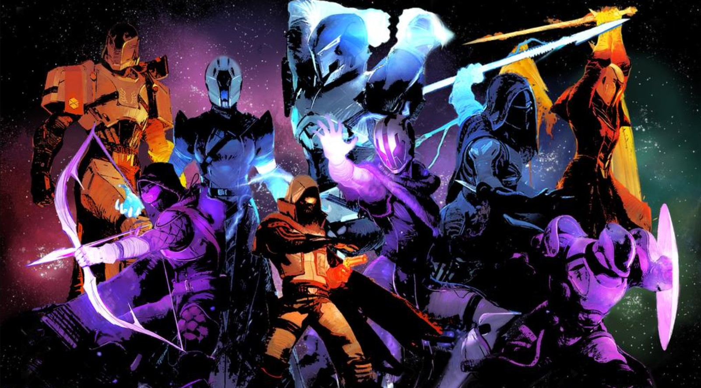

The Classes and subclasses in Destiny 2

There are 3 types of Guardian classes:
- The Hunter
- The Warlock
- And the Titan
as you can see in the image above, there are 9 Guardians each wielding a weapon, you see that there are 3 wielding a Solar weapon, 3 wielding a void weapon and 3 wielding an arc weapon
These three types of Guardians have each three types subclasses, each of the subclasses have their own element and own unique abilities
The subclasses of the Hunter are:
- The Nightstalker, the Nightstalker is the Hunters Void subclass
- The Gunslinger, the Gunslinger is the Hunters Solar subclass
- The ArcStrider, the Arcstrider is the Hunters Arc subclass
The subclasses of the Titan are:
- The Sentinel, the Sentinel is the Titans Void subclass
- The Sunbreaker, the Sunbreaker is the Titans Solar subclass
- The Striker, the Striker is the Titans Arc subclass
The subclasses of the Warlock are:
- The Voidwalker, the Voidwalker is the Warlocks Void subclass
- The Dawnblade, the Dawnblade is the Warlocks Solar subclass
- The Stormcaller, the Stormcaller is the Warlocks Arc subclass
However, recently, Bungie added another element. Stasis
and because of that, there is 1 more subclass for each guardian:
- The Revenant subclass for the Hunter
- The Behemoth subclass for the Titan
- The Shadebinder subclass for the Warlock
a description of what the elementVoid means from the Destiny 2 wiki-pageclick here to visit the site
a description of what the elementSolar means from the Destiny 2 wiki-pageclick here to visit the site
a description of what the elementArc means from the Destiny 2 wiki-pageclick here to visit the site
a description of what the elementStasis means from the Destiny 2 wiki-pageclick here to visit the site